Rex는 누가, 왜 만들었나
Rex는 터미널 에뮬레이터, 멀티플렉서, 세션 유지, 원격 접속을 앱 하나에 담은 도구예요. 발표자는 10년 동안 써 온 tmux + Ghostty 조합을 처음으로 바꿀지 고민하게 됐다고 해요. 아직 베타이고 일부는 알파지만, 만든 사람을 보면 믿을 만하다는 게 출발점이에요.
만든 곳은 Superlogical이에요. HashiCorp를 세우고 Ghostty를 만든 Mitchell Hashimoto가 새로 차린 회사죠. 아래 화면은 Superlogical 홈페이지예요. 가운데에 'We are building the multiplexer for all work'라는 문장이 있고, 왼쪽 아래에 'Rex is now in beta' 표시가 보여요.
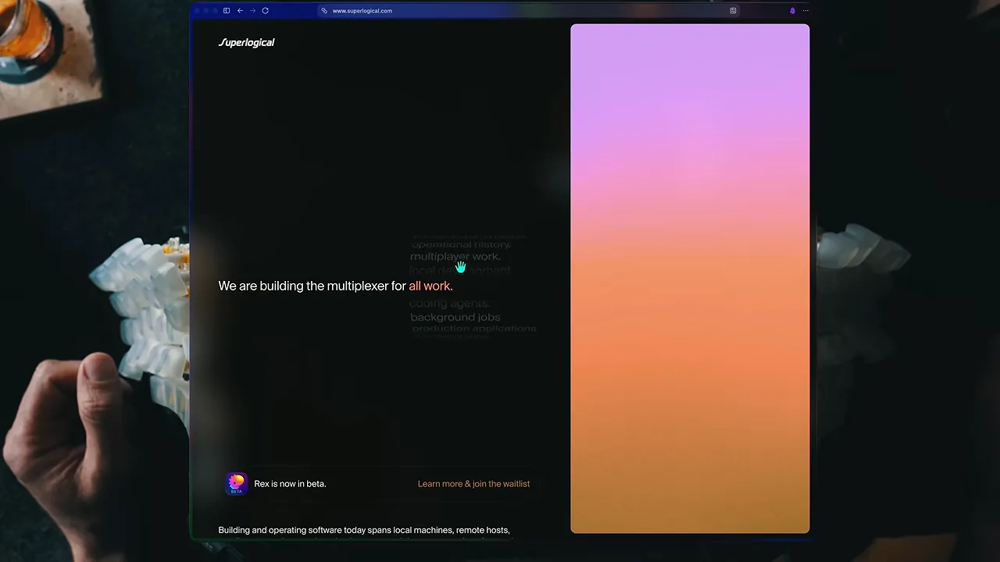
Rex는 Ghostty에서 터미널 엔진만 떼어 낸 C 라이브러리 libghostty 위에서 돌아요. Mitchell이 다른 프로젝트도 쓰라고 공개해 둔 그 라이브러리예요.
오픈소스가 아니라는 점
발표자가 '방 안의 코끼리'라고 부른 문제예요. Rex는 오픈소스가 아니에요. 대신 공지에는 Rex가 앞으로도 계속 무료이고, 클라이언트와 서버 자체로는 돈을 벌지 않으며, 터미널 데이터를 모으거나 공유하지 않는다고 적혀 있어요. 어떻게 돈을 벌지는 발표자도 잘 모르겠다며, HashiCorp처럼 오픈소스 뒤에 SaaS나 지원으로 버는 모델일 수 있다고 추측해요.
누가 만들고 누가 투자했나
팀에는 HashiCorp, Vercel, Heroku 출신이 모였어요. 아래 화면 왼쪽에 Mitchell Hashimoto, Jack Pearkes, Alasdair Monk, Hector Simpson 네 사람의 소개가 있고, 오른쪽에 세 회사 로고가 있어요.
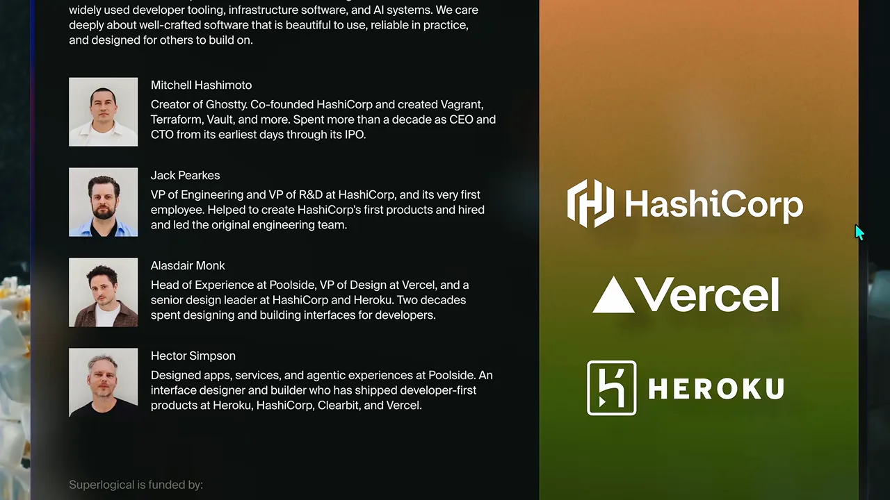
투자자 중에서는 Armon Dadgar(HashiCorp 공동창업자), Guillermo Rauch(Vercel 창업자), Mario Zechner(발표자가 아끼는 에이전트 하네스 Pi를 만든 사람), Tobi Lütke(Shopify 창업자)를 콕 집어 소개해요.
첫 실행과 Lua 설정
베타 초대를 받고 앱을 설치해서 처음 열면 터미널 대신 'No Sessions'라는 화면이 먼저 떠요. 발표자는 터미널이 세션 이야기로 시작하는 걸 처음 봤다고 해요. tmux도 이렇게 시작하지는 않거든요.
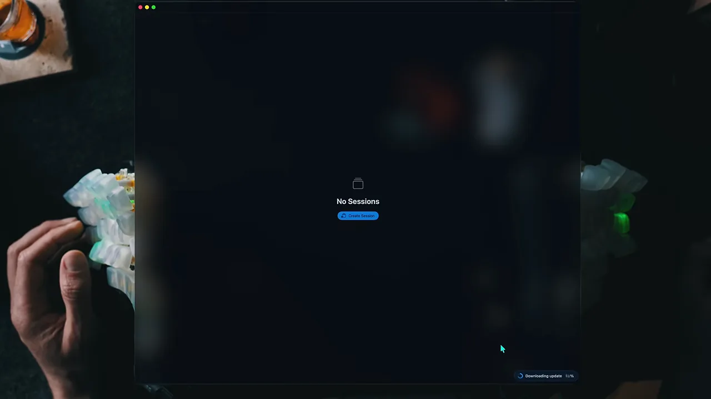
세션이 뜨면 셸과 위쪽 탭이 보여요. 문서는 꽤 자세하고, 영상 시점에 Linux는 서버로만 쓸 수 있었어요.
설정이 코드라는 것
Rex는 Lua로 설정해요. Neovim처럼 설정 파일이 키와 값의 목록이 아니라 실행되는 코드예요. 그래서 함수, 조건, 레이아웃, 액션을 직접 짤 수 있어요. 아래 그림의 init.lua를 보면 dev_layout 함수가 시각을 확인하고(LOGIC), 18시 전이면 오른쪽 분할을 만드는 키를 묶어요(LAYOUTS). 마지막 줄은 이 함수 자체를 Cmd+L에 묶어요.
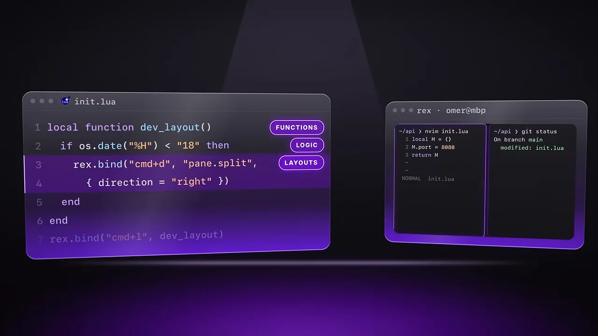
키는 두 가지로 묶을 수 있어요. Cmd+D 같은 키 조합과, Ctrl+B를 누른 뒤 C를 누르는 키 시퀀스예요. 문서의 Key Sequences 페이지에는 tmux 키 배치를 그대로 옮긴 예제가 있어요. 아래 화면 아래쪽 'Example: Tmux Bindings'에서 ctrl+b>c가 새 탭, ctrl+b>%가 오른쪽 분할로 묶여 있어요.
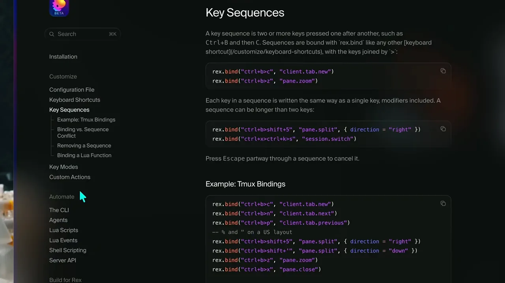
첫 번째 불만: 확대가 셸에만 걸려요
글자를 확대하면 셸만 커지고 탭 같은 Rex의 화면 요소는 그대로예요. tmux는 상태 줄까지 터미널 안에 그리니 전부 같이 커지죠. Rex는 네이티브 UI(User Interface)와 셸이 서로 따로 노는 두 세계라서 생기는 문제라고 해요.
세션, CLI, 커맨드 팔레트
일부러 Rex 창을 하나 더 열어 보면 셸이 새로 뜨고, 위쪽 세션 이름도 달라져요. 창마다 다른 세션을 Rex가 알아서 관리하는 거예요. 아래 화면은 세션 메뉴를 연 모습이에요. 맨 위에 지금 세션 wandering-summit, 그 아래에 다른 세션 wispy-reef, 그리고 New Session과 Add Remote Host가 있어요.
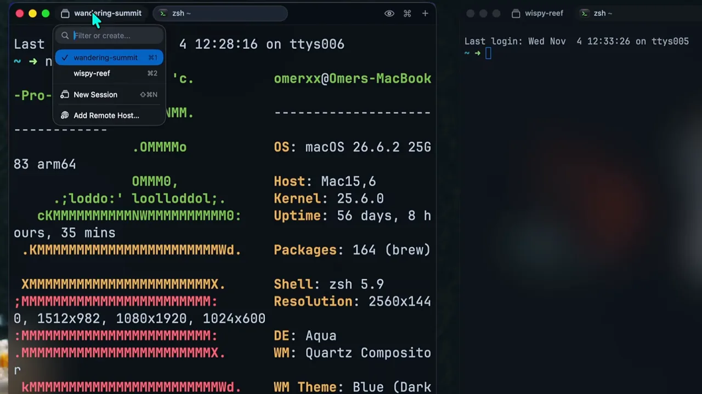
모든 동작이 CLI로도 돼요
Rex에는 서버와 같은 API(Application Programming Interface)를 쓰는 CLI가 들어 있어요. 단축키나 Lua로 할 수 있는 일을 모두 명령으로도 감싸 놨으니, 셸 스크립트로 자동화나 플러그인을 만들 수 있어요. rex ls를 치면 돌고 있는 세션이 LABEL과 ID로 나와요.
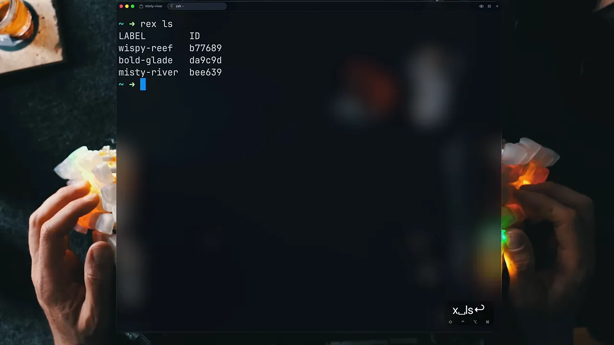
Rex 안에서 tmux를 돌릴 수도 있어요. 발표자는 아무 의미 없는 짓이고 Mitchell이 화낼 거라고 웃지만, 결국 셸이 도는 터미널이니까 된다는 거예요.
도움말을 보면 명령이 꽤 많아요. 아래 화면에는 설정 파일 다루기(config), 키가 하는 일 보기(keymap), 홈 서버 고르기(home), 접속할 호스트 관리(hosts), 셸 자동완성(completion), 에이전트가 Rex를 쓰게 하는 설정(skill) 등이 보여요.
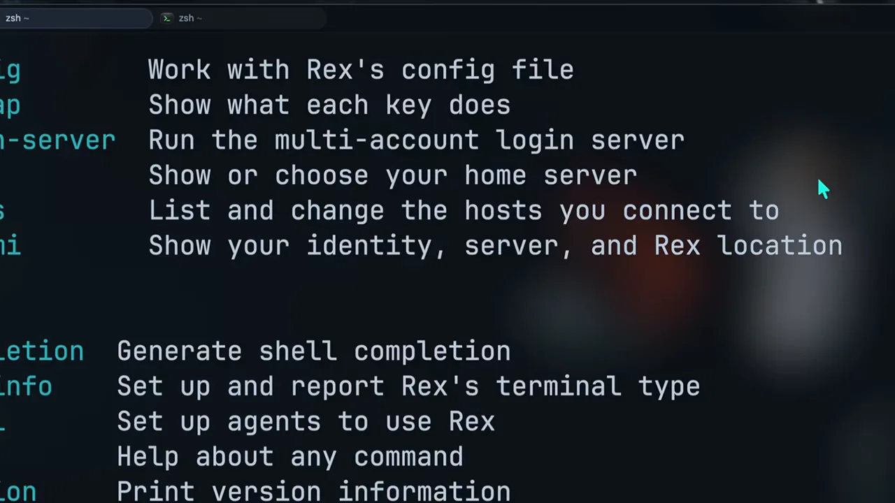
두 번째 불만: 글자 크기
확대가 셸에만 걸리는 문제가 여기서도 이어져요. 새 세션, 탭, 페인을 열 때마다 설정 파일에 적힌 작은 글자 크기로 돌아가요. 바꾸려면 설정을 고쳐야 해요.
커맨드 팔레트와 페인 다루기
네이티브 앱이라 좋은 점도 있어요. 커맨드 팔레트예요. 위쪽 아이콘이나 단축키로 열면 모든 동작을 퍼지 검색으로 찾을 수 있어요. 아래 화면에는 Rename Session, New Tab, Go to Directory, Move Tab to New Window 같은 항목이 단축키와 함께 나열돼 있어요.
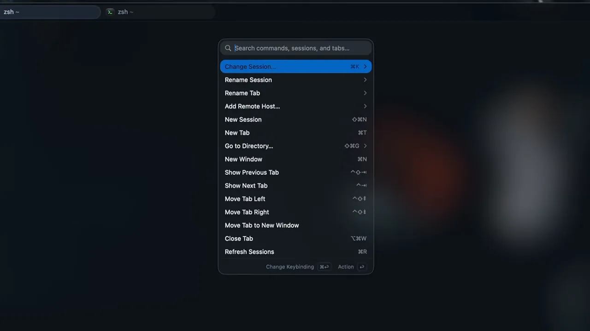
페인을 나누면 포커스된 페인만 색이 살짝 밝아져요. tmux는 테두리를 그려서 이 문제를 풀었는데, 발표자는 Rex 쪽이 더 매끄럽다고 해요. Cmd+Option+화살표로 페인 사이를 옮겨 다니고, 가운데 교차점을 끌면 여러 페인 크기가 한 번에 바뀌어요. 팔레트의 balance를 고르면 다시 고르게 맞춰져요.
창을 닫아도 남는 세션, 떠 있는 페인
Rex 창을 완전히 닫았다가 다시 열어 봐요. 세션이 모두 서버에 그대로 남아 있어요. 사라진 게 없어요.
발표자는 지금까지 이 일을 tmux에 맡겨 왔어요. 아래 그림처럼 tmux 서버가 뒤에서 돌면서 편집기 세션, 로그 세션을 붙잡고 있죠. 문제는 터미널을 열고 tmux에 붙는 걸 깜빡하면 그 뒤로 하는 일은 아무것도 남지 않는다는 거예요.
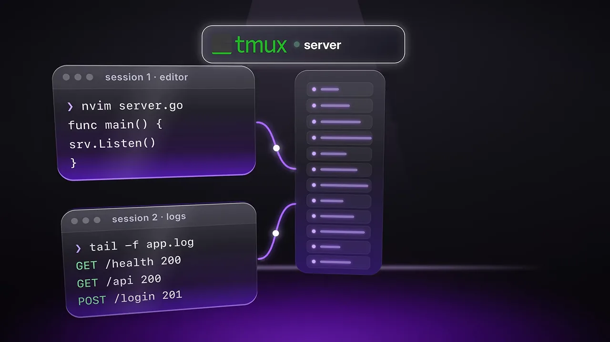
Rex는 세션을 디스크에 저장해요. 그래서 재시작은 물론 서버가 죽어도 세션이 살아남아요. 다른 도구로는 꽤 공들여야 얻는 성질이에요. 발표자는 탭을 열 개씩 열어 두는 사람에게도 Rex가 좋은 선택이라고 봐요. 키보드 고수가 아니어도 마우스로 쓰면서 이 혜택을 그대로 받을 수 있으니까요.
떠 있는 페인
페인을 띄울 수도 있어요. 단축키는 Option+Cmd+Enter예요. 아래 화면 오른쪽 아래 작은 창이 떠 있는 페인이에요. 그림자가 있어서 다른 페인 위에 떠 있다는 게 보여요.
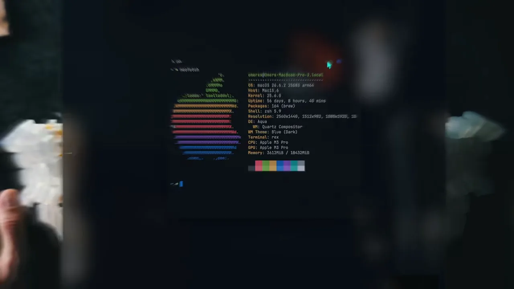
떠 있는 페인 위쪽에는 새 버튼이 생겨요. 그 안에서 가로나 세로로 다시 나눌 수 있어서, 작은 창 하나처럼 다룰 수 있어요. 페인 아이콘을 누르면 아래 레이아웃의 빈 자리를 찾아 들어가요. 크기를 바꾸고 옮겨 가며, 항상 위에 떠 있는 작업 창으로 쓰면 돼요.
여기까지 영상에 나온 기본 단축키를 모으면 이래요. 발표자는 이동 키가 자기 취향은 아니라서 나중에 tmux 설정에 맞춰 바꾸겠다고 해요.
| 하고 싶은 일 | 기본 단축키 | 다른 방법 |
|---|---|---|
| 세션 메뉴 열기 | Cmd+K | 창 위쪽 세션 이름 클릭 |
| 커맨드 팔레트 열기 | 있지만 영상에선 안 나와요 | 위쪽 명령 아이콘 클릭 |
| 페인 사이 이동 | Cmd+Option+화살표 | 마우스 클릭 |
| 페인 크기 고르게 맞추기 | — | 팔레트에서 balance |
| 페인 띄우기·다시 넣기 | Option+Cmd+Enter | 드래그, 페인 아이콘 |
| 설정 열기 | Cmd+, | — |
AI 에이전트 추적과 아쉬운 점
tmux에서만 보던 기능이 하나 더 있어요. 떠 있는 페인을 최소화하면 오른쪽 아래 구석에 모였다가 언제든 다시 꺼낼 수 있어요. 최소화와 복원은 커맨드 팔레트, CLI, Lua API 어디서나 할 수 있어요.
이름이 헷갈리는 이유
팔레트에서 이름을 바꾸면 페인 이름이 바뀔 줄 알았는데, 실제로는 그 위의 창 이름이 바뀌어요. 떠 있어도 결국 페인일 뿐이고, 계층은 위의 창이 정하기 때문이에요. 그래서 최소화된 페인에는 'zsh'만 적혀 있어요. 열 개쯤 쌓이면 무엇이 무엇인지 알 수 없다는 게 발표자의 불만이에요.
AI 에이전트 상태를 알아서 보여 줘요
요즘은 AI 에이전트를 받쳐 주지 못하는 도구는 금방 밀려나요. Rex는 이것도 기본으로 챙겨요. 터미널에서 pi를 치면 위쪽 탭에 Pi 전용 아이콘이 붙어요. 아래 화면 위쪽에 misty-river 세션 옆으로 neofetch 탭과 zsh 탭이 보이고, 셸에 pi를 입력한 상태예요.
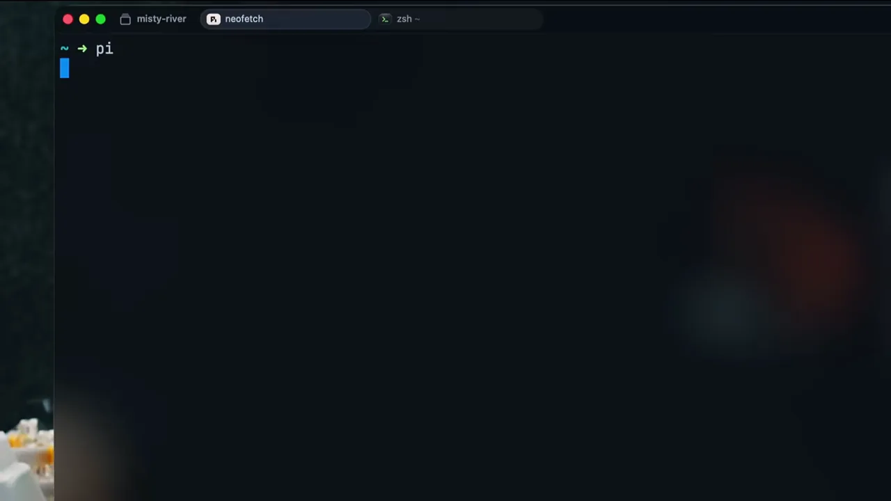
에이전트가 일하는 동안 다른 탭으로 옮겨도 그 탭에 작업 중 애니메이션이 돌아요. 그런데 한계도 보였어요. 아래 화면에서 Pi는 'Do you like pizza more than steak?'라고 묻고 보기 네 개를 내놓은 채 대답을 기다리고 있어요. 그런데도 탭은 계속 작업 중으로 나왔어요.
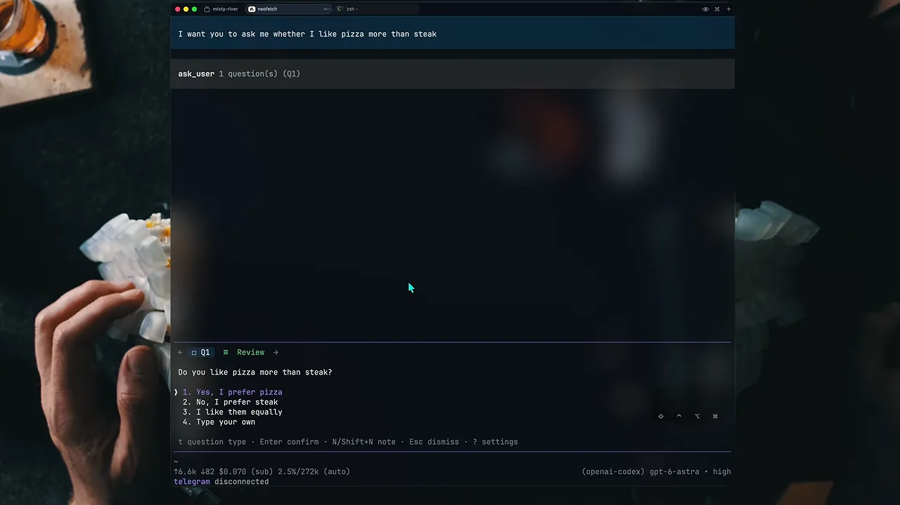
대신 작업이 끝나면 탭에 파란 점이 붙고, 소리와 함께 OS(Operating System) 알림이 떠요. 따로 설정할 것 없이 그대로 돼요.
가장 큰 빈자리: 히스토리 모드
발표자는 tmux 히스토리 모드를 많이 써요. 키보드로 스크롤백을 거슬러 올라가 줄을 찾고, 복사해서 다른 곳에 붙이는 방식이죠. Rex에는 이게 없어요. 텍스트 검색과 결과 사이 이동은 브라우저처럼 되지만, 비주얼 모드로 출력을 골라 복사하는 기능은 없어요. 발표자는 '거의' 결정적인 단점이라고 해요. 다음 기능들 때문에 '거의'에서 멈춘다고요.
경로 이동, 원격 호스트, 설정
Ctrl+Cmd 조합을 누르면 커서 아래 경로가 뜨고, 입력을 시작하면 최근에 간 경로와 다른 후보가 나와요. 발표자가 평소 쓰는 zoxide 같은 경로 이동을 Rex 안에 넣은 셈이에요. 운영체제의 '이동' 기능처럼 프로젝트 안 경로를 찾아 바로 갈 수도 있어요. 탭을 옆 패널로 옮기면 세션, 탭, 활성 에이전트가 한눈에 보여요.
여러 호스트를 한 화면에서
메뉴의 필터를 누르면 세션을 호스트별로 거르거나 전부 보여 줘요. Rex가 처음부터 여러 호스트를 한 화면에서 다루는 지휘소로 설계됐다는 뜻이에요. Linux 서버판이 먼저 나온 이유도 여기 있어요. 원격 머신에 Rex 서버를 깔고 맥 클라이언트에서 조종하는 거죠. 영상에 나온 연결 방식을 한 그림으로 모으면 이렇게 돼요.
설정을 열면 Tailscale부터 나와요
Cmd+,로 설정을 열면 맨 위 Server 항목에 Rex Server 상태와 함께 'Sign in to Tailscale'이 보여요. 터널이 기본으로 들어 있어서, 여기서 로그인하면 이 맥이 바로 Tailscale 네트워크에 올라가요.
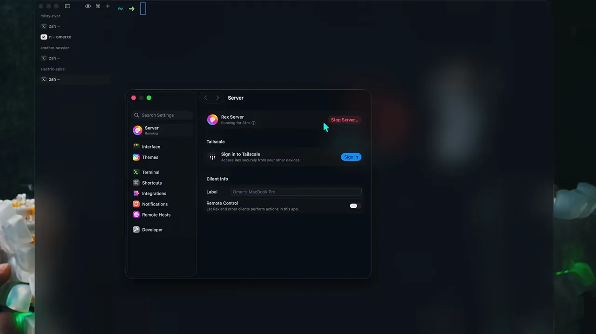
발표자는 문서를 안 읽고 일단 만져 보는 편이라, 웹 UI로 Rex를 어디서나 볼 수 있을 줄 알았어요. 그런데 설정 상자에는 다른 기기의 Rex와 짝을 지으라고 적혀 있었어요. 그래서 아직 베타도 아닌 Rex iOS 앱 테스트를 베타 테스터 Discord에서 신청해요.
보기 설정과 에이전트 연동
기다리는 동안 설정을 더 둘러봐요. Interface 항목에는 페인 틴트와 글래스 효과, 탭 스타일과 아이콘, 제스처, 애니메이션 스타일, 앱 아이콘 선택이 있어요. 아래 화면에서 Animation과 App Icon 항목이 보여요.
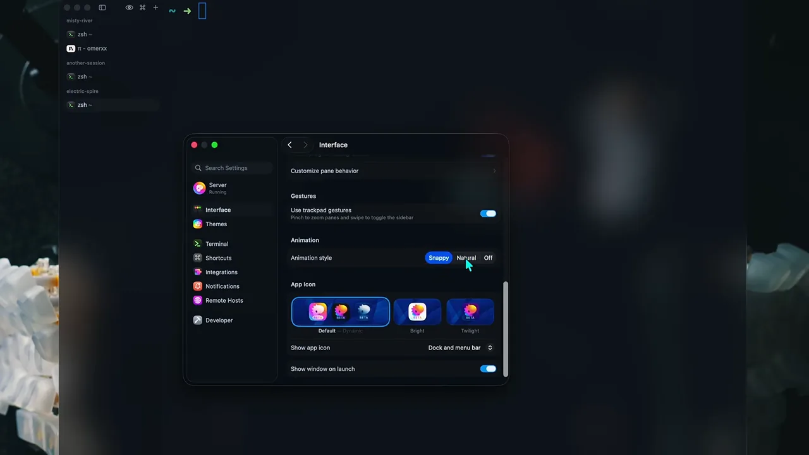
테마도 고를 수 있어요. 영상에 쓴 테마는 Cobalt Foundry예요. Terminal 항목에서 글자 크기를 바꿀 수 있지만, 이것도 터미널에만 걸리고 UI에는 걸리지 않아요. Integrations에서 에이전트 연동을 켜면 에이전트가 Rex 스킬을 써서 페인을 직접 다룰 수 있어요. 에이전트 상태(작업 중, 막힘, 완료, 오류)를 어떻게 보여 줄지도 정할 수 있어요.
Lua 설정 실습과 iPhone 원격 연결
이제 설정 파일을 직접 고쳐 봐요. Lua 관례대로 설정은 init.lua에서 시작해요. 발표자는 Cmd+D를 오른쪽 분할에 묶고 저장해요.
그다음 rex config reload를 쳐요. 아래 화면처럼 'generation: 3'이 돌아와요. 설정을 몇 번째로 다시 읽었는지 알려 주는 번호예요. 이제 Cmd+D를 누르면 오른쪽으로 분할이 생겨요. 새 페인은 여전히 작은 글자지만요.
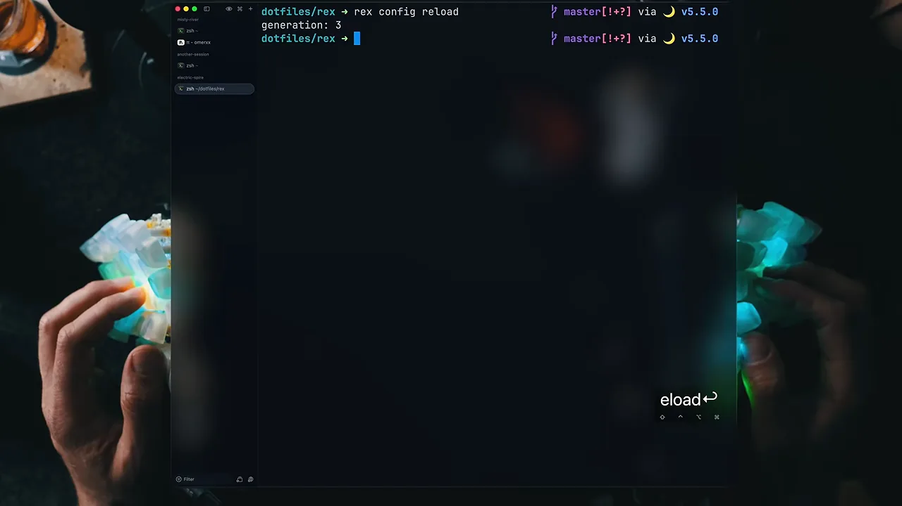
이어서 Ctrl+B 다음 C를 새 탭에 묶어요. tmux의 prefix 방식 그대로예요. 다시 불러온 뒤 새 설정을 써요. 설정이 맞는지 확신이 없으면 미리 검사하는 명령도 있어요. 문서에는 크기 조절, 모드 전환, 서버·Mac·iOS별 설정까지 훨씬 많은 내용이 있어요.
rex.bind("ctrl+b>c", "client.tab.new")iPhone에서 맥의 세션 이어 쓰기
새 플랫폼 알파 테스트에 등록하자 iOS 앱 초대가 와요. 앱을 열면 'Pair via QR Code' 화면이 나오고, 맥 설정에 뜬 QR 코드를 찍으면 Tailscale 아이콘과 함께 연결돼요.
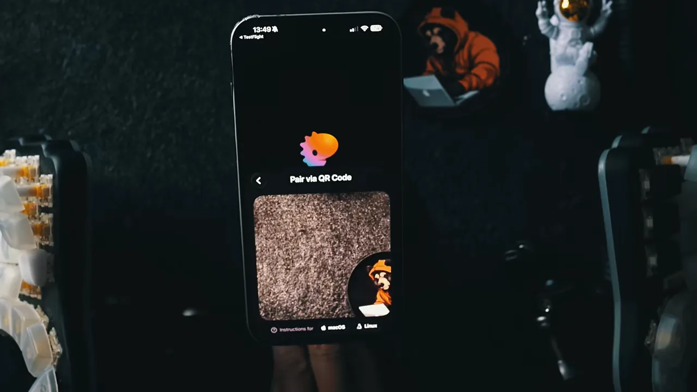
연결되면 맥의 세션이 폰에 모두 보여요. Pi 세션 기록도 있고, dotfiles 아래 Rex 설정을 폰의 Neovim으로 열어 고칠 수도 있어요. 아래 화면이 그 모습이에요. 위쪽에 rex.bind 줄들이 보이고, 아래에는 폰 키보드가 떠 있어요.
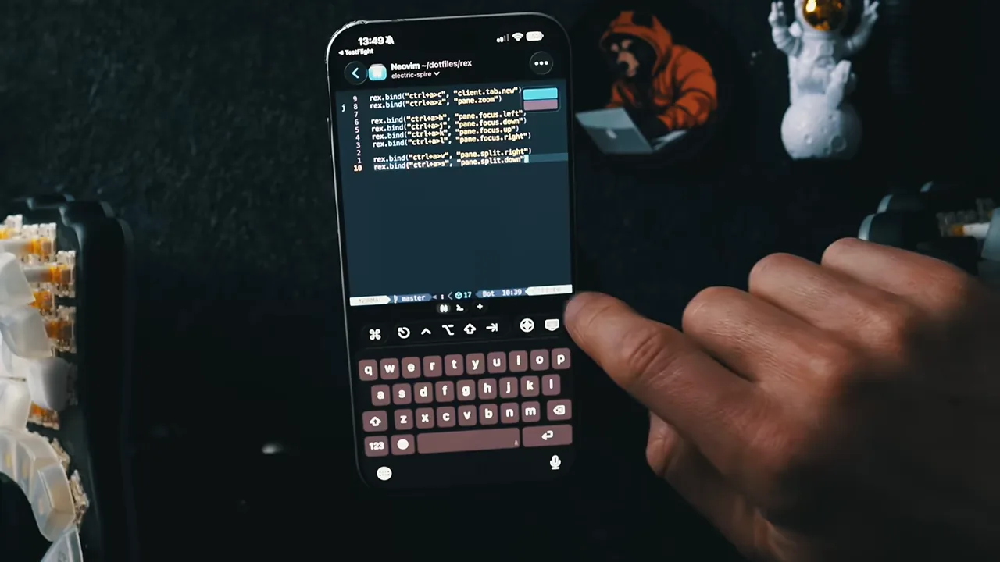
아직 다루지 못한 것
발표자는 손대지 못한 네 가지를 꼽으며 마무리해요. 복잡한 설정, tmux 설정 옮기기, sessionx 붙이기, 그리고 Linux 서버예요. 지금 바로 쓸 수 없는 소프트웨어라 답답할 수 있지만, 곧 베타와 알파를 벗어나기를 바란다고 해요.
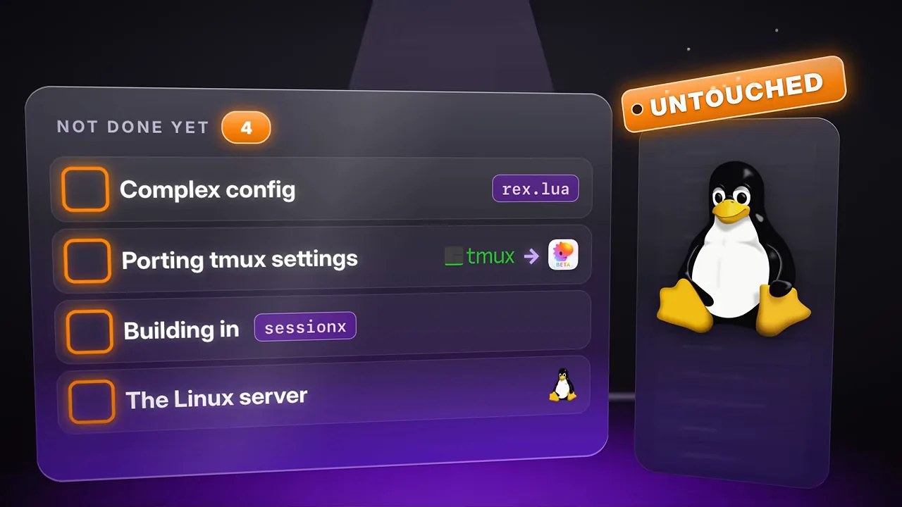